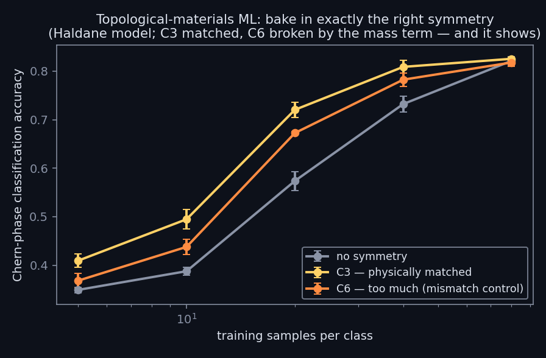

← research · playground · the six-year story · code & logs
Classifying topological phases of the Haldane model: the physically matched C3 prior wins everywhere data is scarce — and the too-large C6 group, broken by the physics, underperforms it everywhere. The law cuts both ways.

The Haldane model's sublattice mass breaks the honeycomb's 6-fold symmetry down to 3-fold — so a C3-equivariant classifier is the physically matched prior, while C6 is a built-in mismatch control. Classifying Chern number from band structure on a hex k-mesh, at matched parameters (~15k), with the dataset verified exactly C3-symmetric and all architectures verified exactly equivariant (error 0).
The point of the design is the two-sided test: the matched group must win and the over-large group must lose, on the same data, at the same budget. Both halves landed. Crystallographic point-group equivariance for topological-phase classification is a comparatively quiet corner of materials ML — most work uses continuous SO(3)/E(3) machinery.
Part of a ~30-experiment program run under one hard rule: no result is recorded before its run completes. Methods and logs: github.com/dwatces.